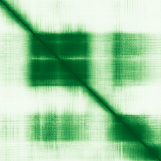

type: protein-evaluation gene: "DNAJC30" date: 2026-06-03 tags: [protein-scout, rejected, evaluation] status: rejected ---
DNAJC30 — REJECTED (核定位证据不足 (核定位得分 2/10 ≤ 3))
1. 基本信息
| 项目 | 内容 |
|---|---|
| 基因名 / 别名 | DNAJC30 |
| 蛋白名称 | DnaJ homolog subfamily C member 30, mitochondrial |
| 蛋白大小 | 226 aa / 26.0 kDa |
| UniProt ID | Q96LL9 |
| 评估日期 | 2026-06-03 |
2. 评分总览
| 维度 | 得分 | 满分 | 加权后 | 关键证据摘要 |
|---|---|---|---|---|
| 核定位特异性 | 2/10 | ×4 | 8 | HPA: 暂无HPA定位数据; UniProt: Mitochondrion inner membrane |
| 蛋白大小 | 10/10 | ×1 | 10 | 226 aa / 26.0 kDa |
| 研究新颖性 | 8/10 | ×5 | 40 | PubMed strict=40 篇 (≤40→8) |
| 三维结构 | 7/10 | ×3 | 21 | AlphaFold v6 pLDDT=71.4; PDB: 无 |
| 调控结构域 | 6/10 | ×2 | 12 | 无注释结构域 |
| PPI 网络 | 3/10 | ×3 | 9 | STRING 25 partners; IntAct 30 interactions |
| 互证加分 | — | max +3 | 1.0 | PDB+AF+STRING+IntAct cross-validation |
| 原始总分 | 101.0/180 | |||
| 归一化总分 | 56.1/100 |
3. 详细分析
3.1 核定位证据
| 来源 | 定位 | 可信度 |
|---|---|---|
| Protein Atlas (IF) | 暂无HPA定位数据 | No data |
| UniProt | Mitochondrion inner membrane | Swiss-Prot/TrEMBL |
IF 图像状态: HPA未检测到可靠IF图像信号（image_status: no_image_detected）。核定位证据基于HPA subcellular localization注释、UniProt注释和GO-CC术语。
GO Cellular Component:
- 无 GO-CC 注释
结论: 核定位证据极弱，主要数据源均不指向细胞核。
3.2 蛋白大小评估
评价: 大小适中（200-800 aa），适合常规生化实验和结构解析。
3.3 研究现状
| 指标 | 数值 |
|---|---|
| PubMed strict count | 40 |
| PubMed broad count | 40 |
| 别名(未计入scoring) |
关键文献: 1. Comparative genomic and evolutionary analysis of the heat shock protein gene family in the chicken genome.. *Anim Biotechnol*. PMID: 41632590 2. First Case in Lithuania of an Autosomal Recessive Mutation in the DNAJC30 Gene as a Cause of Leber's Hereditary Optic Neuropathy.. *Genes (Basel)*. PMID: 41009939 3. Nuclear Gene-Encoded Leigh Syndrome Spectrum Overview.. **. PMID: 26425749 4. DNAJC30 Mutation in a Patient with Coexisting Leber's Hereditary Optic Neuropathy and Multiple Sclerosis (Harding's Syndrome): A Case Report.. *Case Rep Ophthalmol*. PMID: 40182509 5. An Unusual Presentation of Leber Hereditary Optic Neuropathy-Plus Case Caused by a Novel DNAJC30 Variant.. *Am J Med Genet A*. PMID: 39404442
评价: 非常新颖，仅有少数基础研究。
3.4 三维结构分析
| 指标 | 数值 |
|---|---|
| AlphaFold 版本 | v6 |
| AlphaFold 平均 pLDDT | 71.4 |
| 高置信度残基 (pLDDT>90) 占比 | 25.7% |
| 置信残基 (pLDDT 70-90) 占比 | 33.2% |
| 中等置信 (pLDDT 50-70) 占比 | 13.3% |
| 低置信 (pLDDT<50) 占比 | 27.9% |
| 有序区域 (pLDDT>70) 占比 | 58.9% |
| 可用 PDB 条目 | 无 |
PAE (Predicted Aligned Error): 
评价: AlphaFold 中等质量（pLDDT=71.4，有序区 58.9%），结构基本可用。
3.5 结构域分析
| 来源 | 结构域 |
|---|---|
| InterPro/Pfam | 无注释结构域 |
染色质调控潜力分析: 结构域注释有限，AlphaFold预测有可辨识折叠域。
3.6 PPI 网络
STRING 预测互作 (combined score >0.4):
| Partner | Combined Score | Experimental | 功能类别 |
|---|---|---|---|
| NDUFA7 | 0.000 | 0.000 | — |
| NDUFV3 | 0.000 | 0.000 | — |
| NDUFB11 | 0.000 | 0.000 | — |
| NDUFS2 | 0.000 | 0.000 | — |
| NDUFS6 | 0.000 | 0.000 | — |
| NDUFS4 | 0.000 | 0.000 | — |
| MT-ATP6 | 0.000 | 0.000 | — |
| NDUFS8 | 0.000 | 0.000 | — |
| NDUFB10 | 0.000 | 0.000 | — |
| NDUFS3 | 0.000 | 0.000 | — |
实验验证互作 (IntAct):
| Partner | 方法 | PMID |
|---|---|---|
| uniprotkb:Q96LL9 | psi-mi:"MI:0397"(two hybrid array) | pubmed:- |
| uniprotkb:Q8N6L0 | psi-mi:"MI:0397"(two hybrid array) | pubmed:- |
| uniprotkb:Q4KMG9 | psi-mi:"MI:0397"(two hybrid array) | pubmed:- |
| uniprotkb:Q96PQ1 | psi-mi:"MI:0397"(two hybrid array) | pubmed:- |
| uniprotkb:Q13520 | psi-mi:"MI:0397"(two hybrid array) | pubmed:- |
| uniprotkb:Q8N386 | psi-mi:"MI:0397"(two hybrid array) | pubmed:- |
| uniprotkb:O00623 | psi-mi:"MI:0397"(two hybrid array) | pubmed:- |
| intact:EBI-22326698 | psi-mi:"MI:0397"(two hybrid array) | pubmed:- |
| uniprotkb:Q15125 | psi-mi:"MI:1112"(two hybrid prey pooling approach) | pubmed:- |
| uniprotkb:Q99735 | psi-mi:"MI:1112"(two hybrid prey pooling approach) | pubmed:- |
PPI 互证分析:
- STRING + IntAct 均有数据
- STRING partners: 25，IntAct interactions: 30
- 调控相关比例: 1 / 20 = 5%
评价: STRING 25 个预测互作，IntAct 30 个实验互作。调控相关配体占比 5%。
3.7 多库互证
| 维度 | 来源 | 结果 | 是否一致 |
|---|---|---|---|
| 三维结构 | AlphaFold pLDDT=71.4 + PDB: 无 | pLDDT=71.4, v6 | 仅预测 |
| 定位 | UniProt + HPA | Mitochondrion inner membrane / 暂无HPA定位数据 | 待确认 |
| PPI | STRING + IntAct | 25 + 30 interactions | 数据充分 |
互证加分明细:
- 多库定位一致: +0
- STRING + IntAct 双源验证: +0.5
- 结构域 + AlphaFold 质量: +0.5
- PDB 多条目覆盖: +0
总分: +1.0 / max +3
4. 总体评价
推荐等级: ⭐⭐⭐ (REJECTED)
核心优势: 1. DNAJC30 — DnaJ homolog subfamily C member 30, mitochondrial，非常新颖，仅有少数基础研究。 2. 蛋白大小226 aa，大小适中（200-800 aa），适合常规生化实验和结构解析。
风险/不确定性: 1. PubMed 40 篇，已有一定研究基础 2. 结构数据质量可接受
下一步建议:
- [ ] 查阅最新关键文献补充研究背景
- [ ] 获取 Protein Atlas IF 图像确认亚细胞定位
- [ ] 设计体外实验验证核定位及潜在调控功能
- [ ] 该蛋白核定位证据不足（≤3/10），不建议作为核蛋白研究目标。
5. 数据来源
- UniProt: https://www.uniprot.org/uniprotkb/Q96LL9
- Protein Atlas: https://www.proteinatlas.org/ENSG00000176410-DNAJC30/subcellular
- PubMed: https://pubmed.ncbi.nlm.nih.gov/?term=DNAJC30
- AlphaFold: https://alphafold.ebi.ac.uk/entry/Q96LL9
- STRING: https://string-db.org/network/9606.ENSP00000
- Data fetched live: 2026-06-03